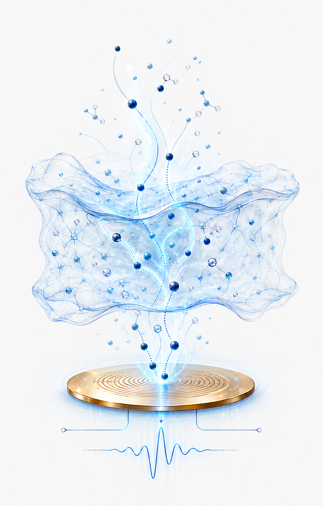
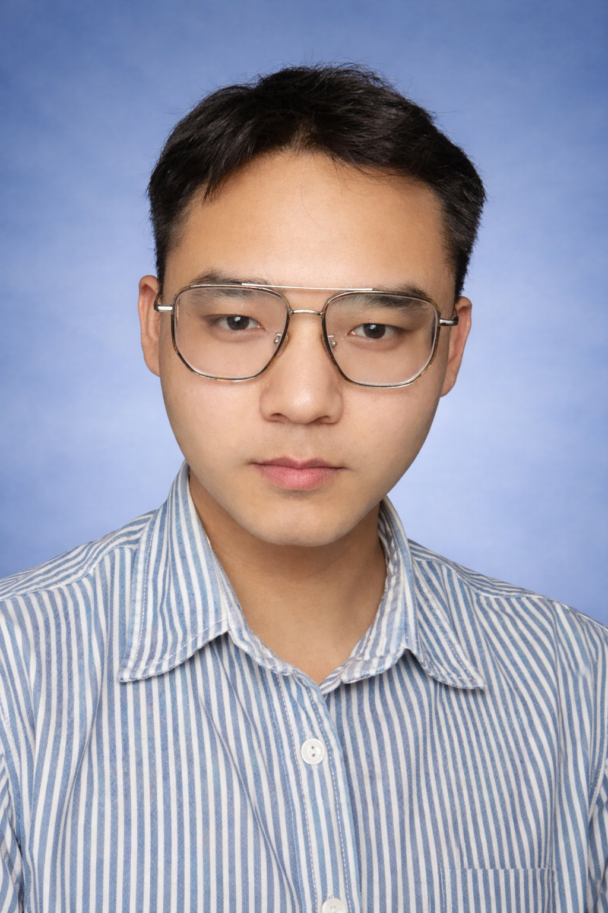
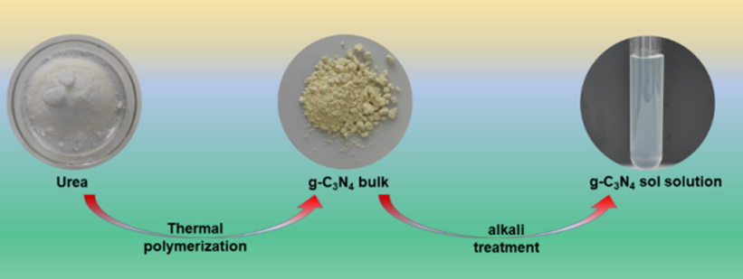
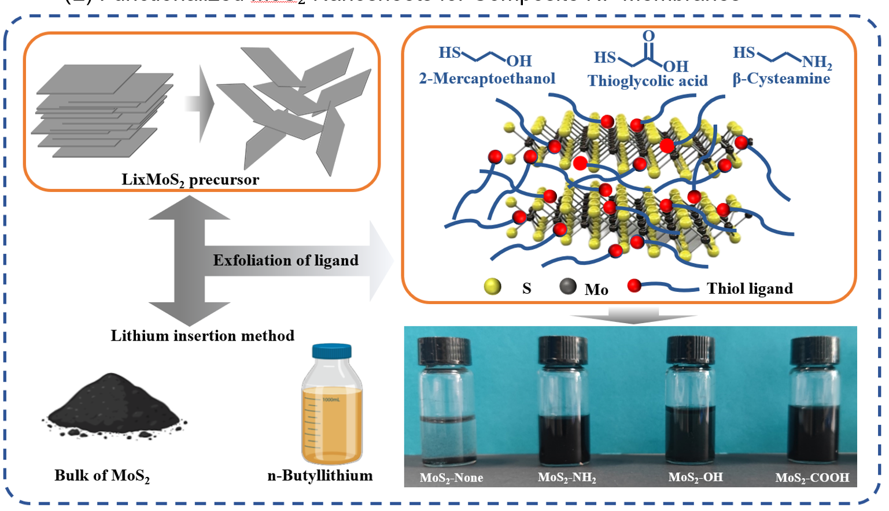
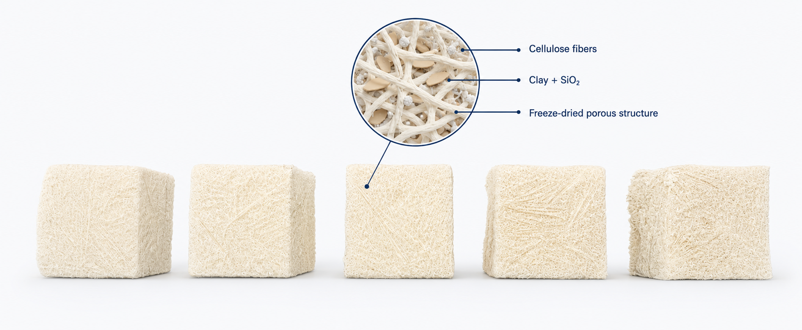
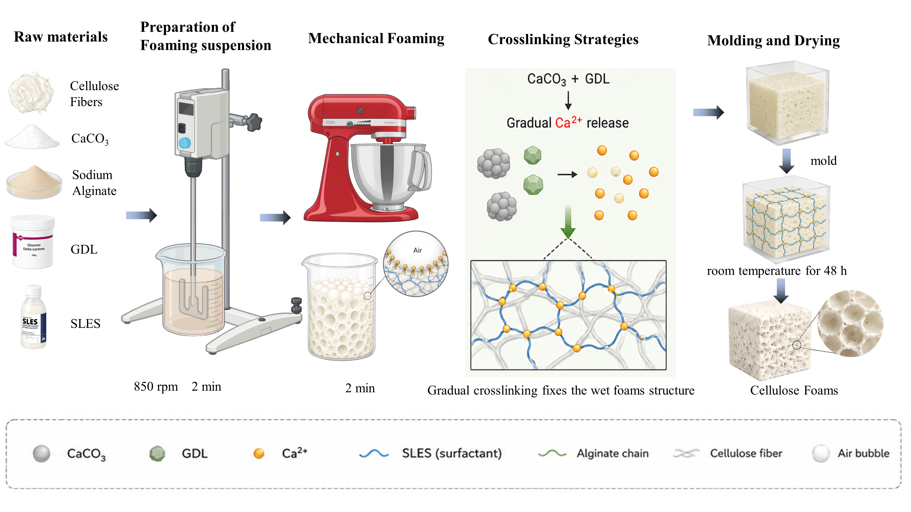
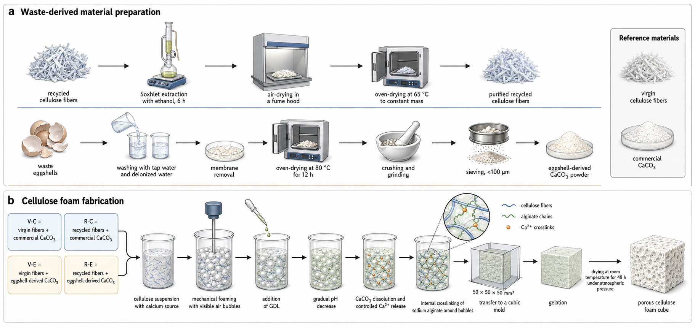
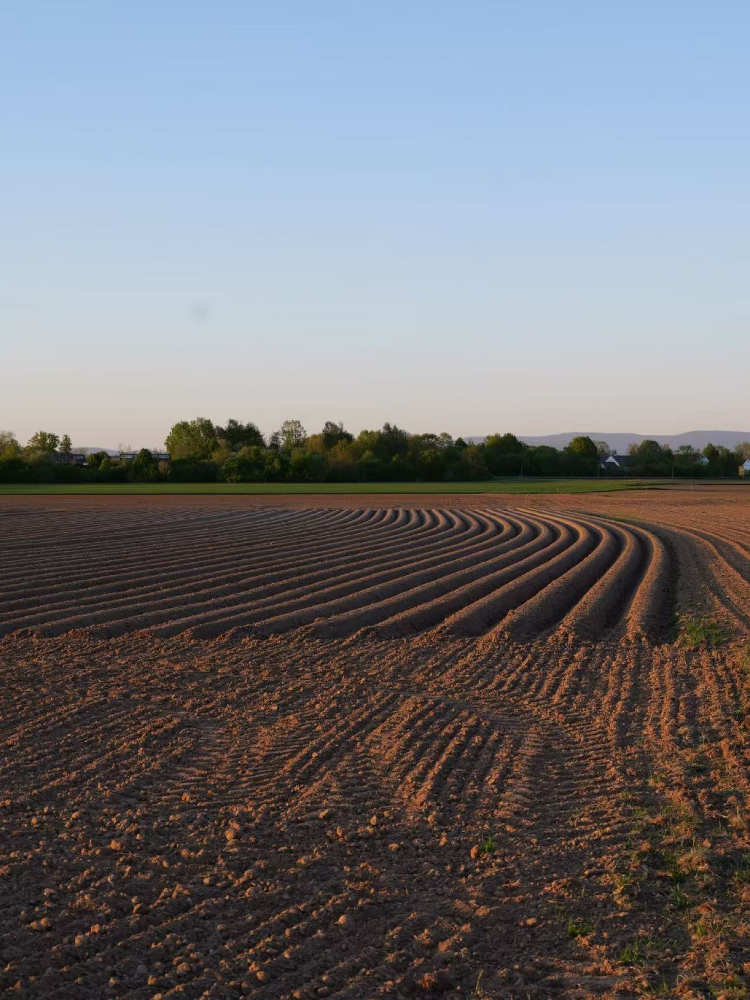
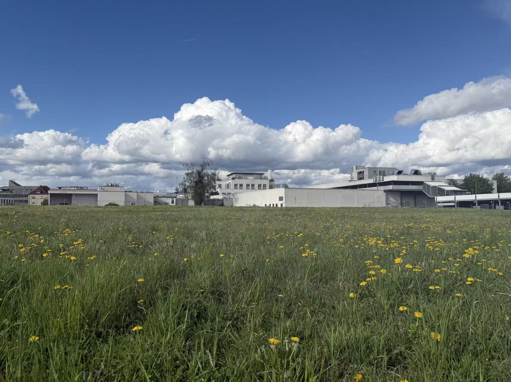
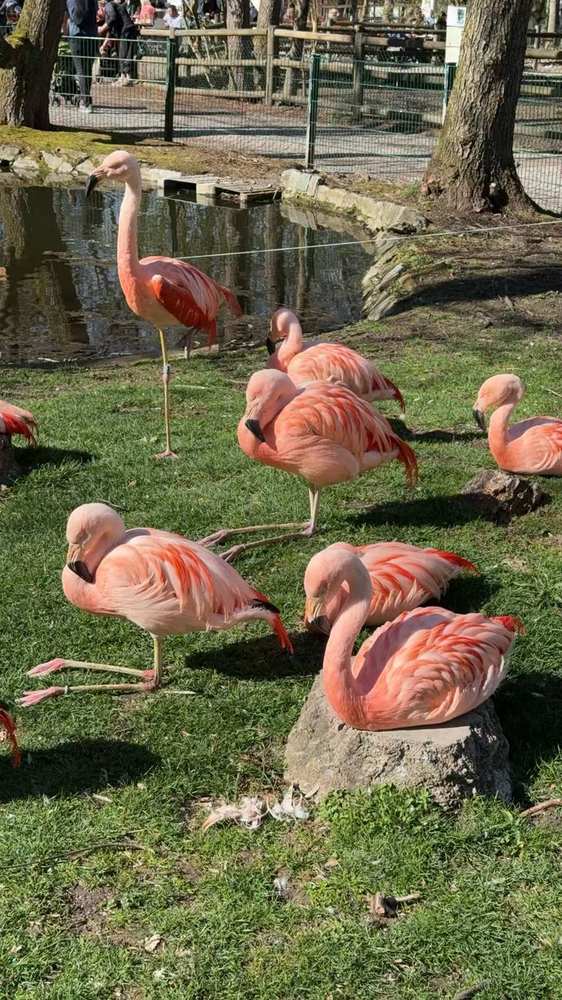

植入式电化学生物传感
研究植入式电化学生物传感器在生理相关条件下的响应行为，重点评估电极性能、信号稳定性及适配体传感体系的可靠性。
我的工作： 金电极准备、基线性能表征、电化学测量及长期信号稳定性分析。
方法： Gold electrodes · CV · EIS · Aptamer sensors · Signal analysis
生物材料与电化学生物传感研究者
我的研究聚焦电化学生物传感器、功能水凝胶涂层与生物界面，同时探索纳米尺度分子传输和可持续功能材料。目前在麻省理工学院与博德研究所开展植入式生物传感器硕士论文研究。

你好，我是莫锐
我目前是慕尼黑工业大学生物源资源技术专业的硕士研究生，正在麻省理工学院与博德研究所开展硕士论文研究。我的研究聚焦于植入式电化学生物传感器及水凝胶保护界面，旨在支持传感器在生理相关条件下实现可靠的长期监测。
我主要研究材料组成、界面结构与分子传输如何影响电极稳定性和传感性能。此前在纳滤膜与多孔纤维素材料方面的研究经历，使我进一步关注如何理解和调控功能界面中的传输过程，并将其应用于生物医学传感和可持续材料领域。
数据来源：Google Scholar · 更新于 2026 年 8 月

我的研究连接生物材料、电化学传感、分子传输与可持续功能材料。
研究植入式电化学生物传感器在生理相关条件下的响应行为，重点评估电极性能、信号稳定性及适配体传感体系的可靠性。
我的工作： 金电极准备、基线性能表征、电化学测量及长期信号稳定性分析。
方法： Gold electrodes · CV · EIS · Aptamer sensors · Signal analysis
开发用于电化学生物传感器的功能水凝胶保护涂层，关注分子扩散、界面黏附、抗生物污染能力和长期信号稳定性。
我的工作： 水凝胶配方设计、涂层制备、电极界面优化及电化学表征。
方法： Hydrogel formulation · Coating preparation · Diffusion · Biointerfaces
以尿素为原料制备 g-C₃N₄ 纳米片，并将其引入水相，通过界面聚合调控 PIP 的扩散与反应路径，构建具有纳米有序中空结构的聚酰胺选择层。
关键发现： Nature Communications（2023）：有序中空纳滤膜的水渗透率达到 105 L·m⁻²·h⁻¹·bar⁻¹，Na₂SO₄ 截留率为 99.4%，Cl⁻/SO₄²⁻ 选择性达到 130。Desalination（2025）：在 150 mg·L⁻¹ g-C₃N₄ 的最优条件下，反渗透膜水通量由 35.8 提升至 46.8 L·m⁻²·h⁻¹，硼去除率由 72.5% 提升至 90.5%，同时保持 99.75% 的 NaCl 截留率。

我的工作： g-C₃N₄ 制备与分散、复合膜界面聚合、膜性能测试及离子传输分析。
方法： g-C₃N₄ synthesis · Interfacial polymerization · Cross-flow nanofiltration · Ion separation
对 MoS₂ 纳米片进行化学剥离，并使用带羟基、氨基、羧基和二羟基的巯基配体进行功能化，以调控其与聚酰胺选择层的界面相容性。首先分别评估功能化 MoS₂ 与 HPE，随后通过界面聚合协同引入两者，以调控亲水性、自由体积和纳米尺度水–离子传输。
关键发现： 优化后的 M-COOH/HPE-150-0.4 膜实现了 58.60 L m⁻² h⁻¹ bar⁻¹ 的水渗透率，同时保持 >90% 的 Na₂SO₄ 截留率。分子动力学模拟进一步确定了 6–9 Å 的选择性层间距范围；超出该范围后，水传输增强的同时离子排斥能力降低。

我的工作： MoS₂ 纳米片剥离与功能化、通过界面聚合制备膜、结构与分离性能表征，以及分子动力学模拟。
方法： Lithium Intercalation · Thiol Functionalization · Interfacial Polymerization · SEM · AFM · XPS · ATR-FTIR · Water/Salt Separation · Molecular Dynamics
相关论文： Tuning the Permeability–Selectivity Balance of Polyamide Nanofiltration Membranes with Functionalized MoS₂ Nanosheets and Hyperbranched Polyester · ChemRxiv 预印本 ↗
开发黏土和二氧化硅改性的纤维素多孔材料，研究纤维处理、材料组成和制备条件对结构、热稳定性及阻燃性能的影响。
我的工作： 纤维预处理、材料配方、冷冻干燥及结构与热性能表征。
方法： Cellulose · Freeze-drying · SEM · FTIR · XRD · TGA

开发由 CaCO₃/GDL 介导的内部凝胶化稳定的纤维素复合泡沫，在减少干燥收缩并保持多孔结构的同时实现常压干燥。研究内部凝胶化程度和制备条件对泡沫稳定性、尺寸变化、孔结构和物理性能的影响。
我的工作： 材料配方、机械发泡、CaCO₃/GDL 介导的内部凝胶化、模具成型、常压干燥，以及结构、物理和机械性能表征。
方法： Cellulose · Alginate · CMC · Kaolin · Mechanical Foaming · CaCO₃/GDL Internal Gelation · Ambient Drying · SEM · XRD · FTIR · Mechanical Testing

利用再生纤维素纤维和蛋壳衍生 CaCO₃ 制备内部凝胶化纤维素复合泡沫，实现废弃物资源化。研究以废弃物衍生原料替代原生纤维素和商业 CaCO₃ 后，对泡沫形成、凝胶行为、尺寸稳定性、孔结构和机械性能的影响。
我的工作： 实验设计、再生纤维与蛋壳衍生 CaCO₃ 配方、机械发泡、内部凝胶化、常压干燥，以及理化、结构和机械性能表征。
方法： Recycled Cellulose · Eggshell-Derived CaCO₃ · Alginate · Mechanical Foaming · Internal Gelation · Ambient Drying · SEM · XRD · FTIR · TGA · Mechanical Testing

DOI：10.26434/chemrxiv.15007538/v1
文章编号：118902
文章编号：124779
卷 14(1) · 文章编号 1112
访问研究生 · 硕士论文研究与研究实习
导师：Prof. Giovanni Traverso 与 Dr. Isaac Tucker
研究助理及实习生
导师：Prof. Cordt Zollfrank 与 Dr. Weixuan Wang
硕士研究生研究员及研究助理
导师：Prof. Changwei Zhao
本科生研究员
导师：Prof. Xudong Yang
访问学生 · 硕士论文研究
生物源资源技术理学硕士
资源与环境科学理学硕士
环境工程学士
生物质纳米材料、二维纳米片（g-C₃N₄、MoS₂）、界面聚合、生物聚合物配方与水凝胶网络构建。
FT-IR · SEM · AFM · TEM · XPS · XRD · TGA
CV、EIS、生物界面传感分析；使用 Materials Studio 与 LAMMPS 开展分子动力学模拟。
A small collection from everyday life and travels across Bavaria.


